2.1: Content Search
Content Search
Content Search provides a mechanism to search, compare, and contrast content across Lifecycle Environments. The types of content include:
- Content Views
- Products
- Repositories
- Packages
- Errata
- Puppet Modules
Definitions
- Lifecycle Environment - A container for content view versions which are consumed by content hosts.
- Content View - A definition of content that combines products, packages, errata and Puppet modules, with capabilities for intelligent filtering and snapshotting. Content Views are a refinement of the combination of channels and cloning from Spacewalk.
- Product - A collection of content repositories.
- Repository - A collection of content (yum repository, puppet repository).
- Package - An RPM
- Erratum - A set of changes consisting of an enhancement, bug or security fix
- Puppet Module - A Puppet Module is a set of Puppet manifests/classes, template files, tests and other components packaged together in a specific directory format. Puppet Modules are typically associated with specific software (eg: NTP, Apache, etc) and contain various classes used to assist in the installation and configuration of that software. Puppet Labs maintains a repository of official and user-contributed modules called the Puppet Forge.
General Workflow
Below is a general workflow for Content Search.
- Select Lifecycle Environments
- Search Packages - Basic
- Search Packages - Advanced
- View Package details
- Compare Repositories
Note: Although Packages are chosen in steps 2-4 of in the workflow above, actions may also be performed on Content Views, Products, Repositories, Errata, and Puppet Modules.
Select Lifecycle Environments
When performing Content Search actions, the default behavior is to search for content in the Library Lifecycle Environment; however, in many cases, it is desirable to perform actions using other Lifecycle Environments.
To select Lifecycle Environments:
- navigate to: Content > Content Search
- hover over the + icon, located on the right side of the page, to display the available Lifecycle Environments
- hover over the desired Lifecycle Environment and click the checkbox displayed next to it
View available Lifecycle Environments: 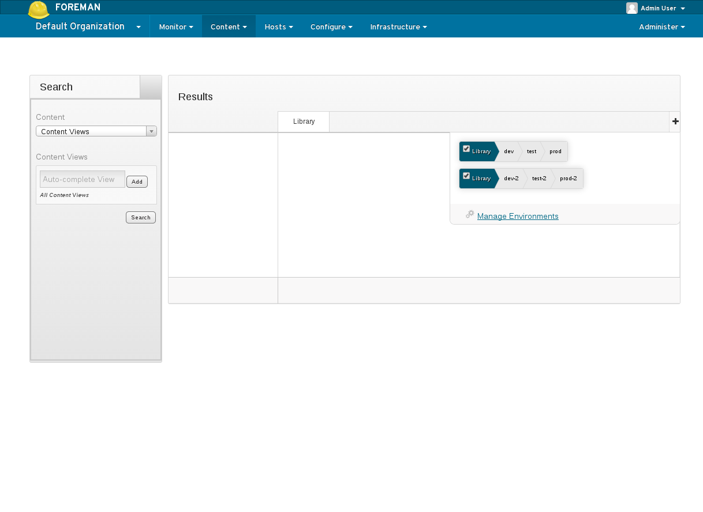
Select Lifecycle Environments: 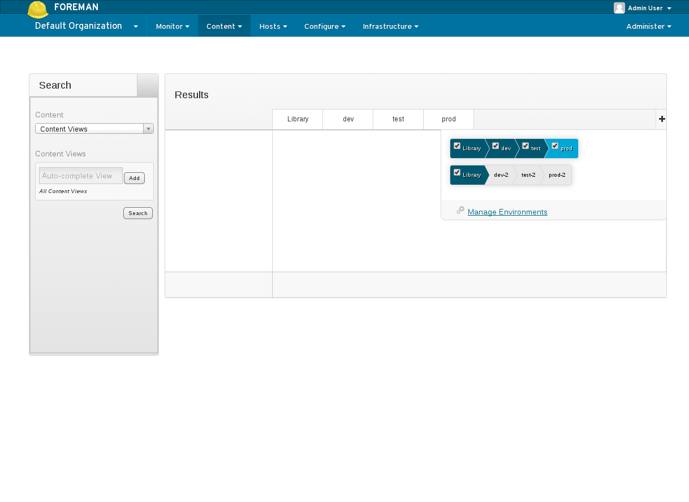
Search Packages - Basic
To search packages:
- perform the following actions from the search widget located on the left side of the page:
- select Content > Packages
- click Search or Refresh Results
- click on the > located to the left of a Product name (e.g. “Red Hat Enterprise Linux”) to view the list of repositories in that product
- click on the > located to the left of a Repository name (e.g. “Red Hat Enterprise Linux 6 Server RPMs x86_64 6Server”)
Note: the above will search for all packages across all Content Views, Products and Repositories for the selected Lifecycle Environments.
Select Content > Packages: 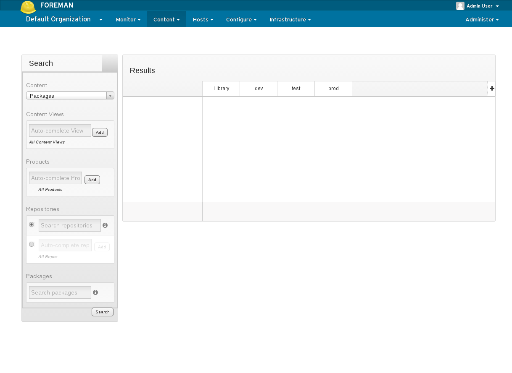
Search Results: 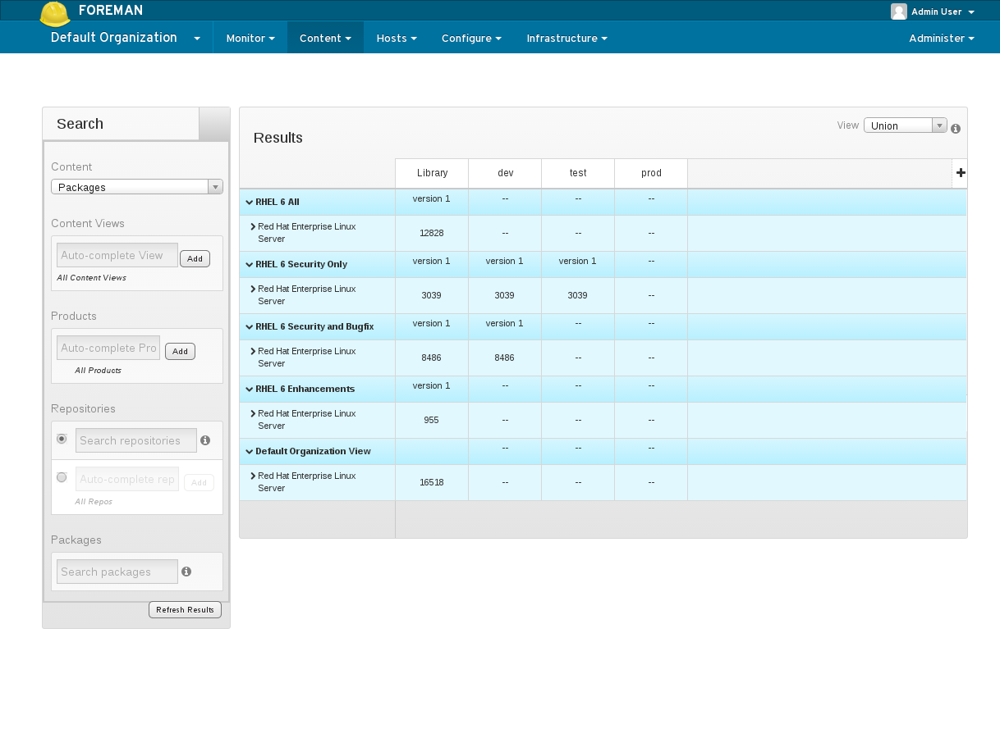
List Repositories within a Product: 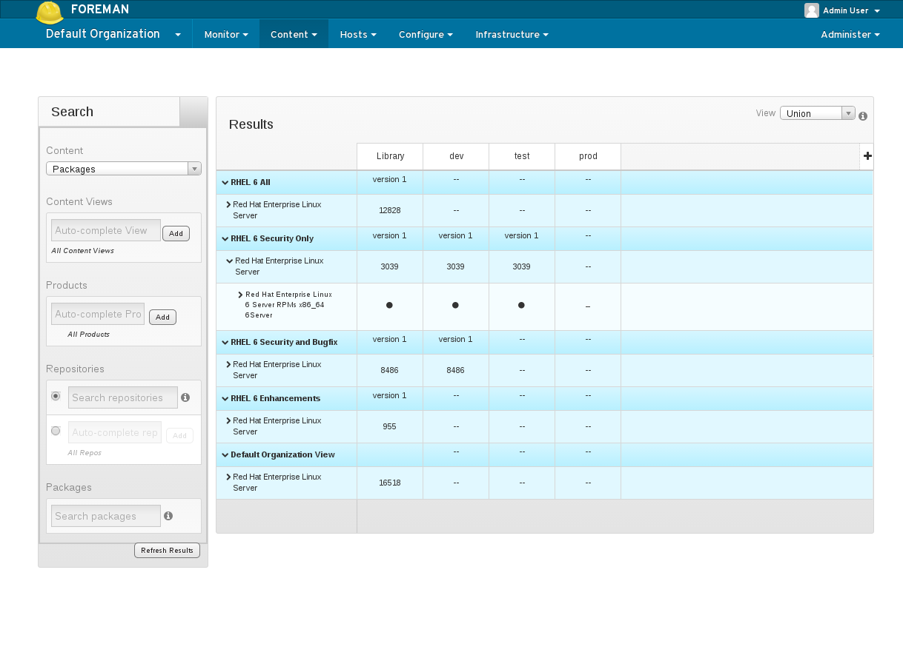
List Packages within a Repository: 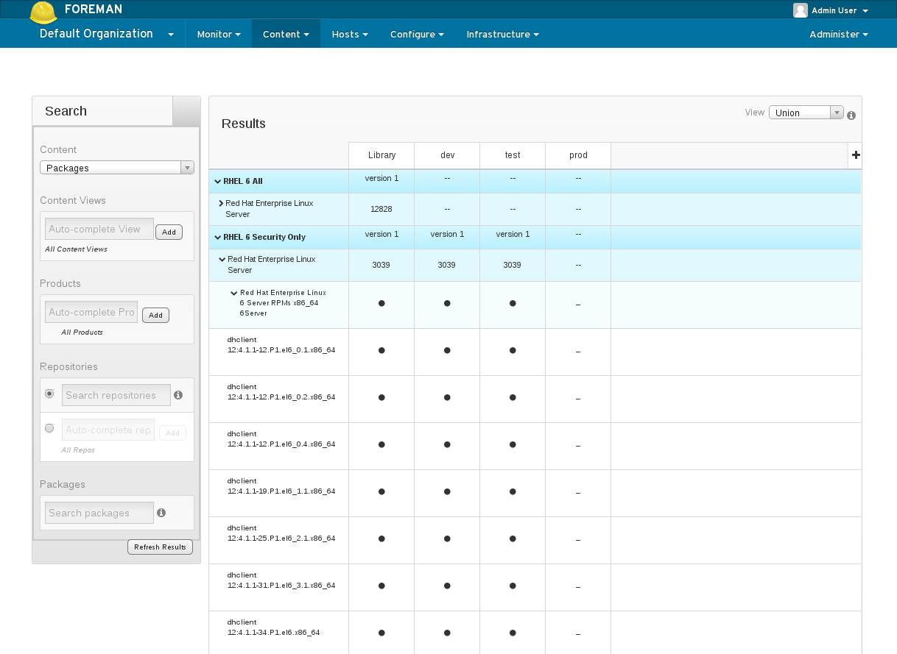
Search Packages - Advanced
Search Packages - Basic illustrates how to search for all packages across all Content Views, Products and Repositories, for the selected Lifecycle Environments; however, it is possible to refine the search using the input fields provided within the search widget.
The following is an example search for all kernel packages within a specific Content View:
- perform the following actions from the search widget located on the left side of the page:
- select Content > Packages
- in the Content View input box, begin entering the name of a Content View (e.g. “RHEL”)
- select one of the Content Views displayed (e.g. “RHEL 6 Security Only”)
- click Add
- in the Packages input box, enter “kernel*”
- For more details on the syntax supported for this input, hover over the (i) icon next to the input.
- click Search or Refresh Results
Search Results: 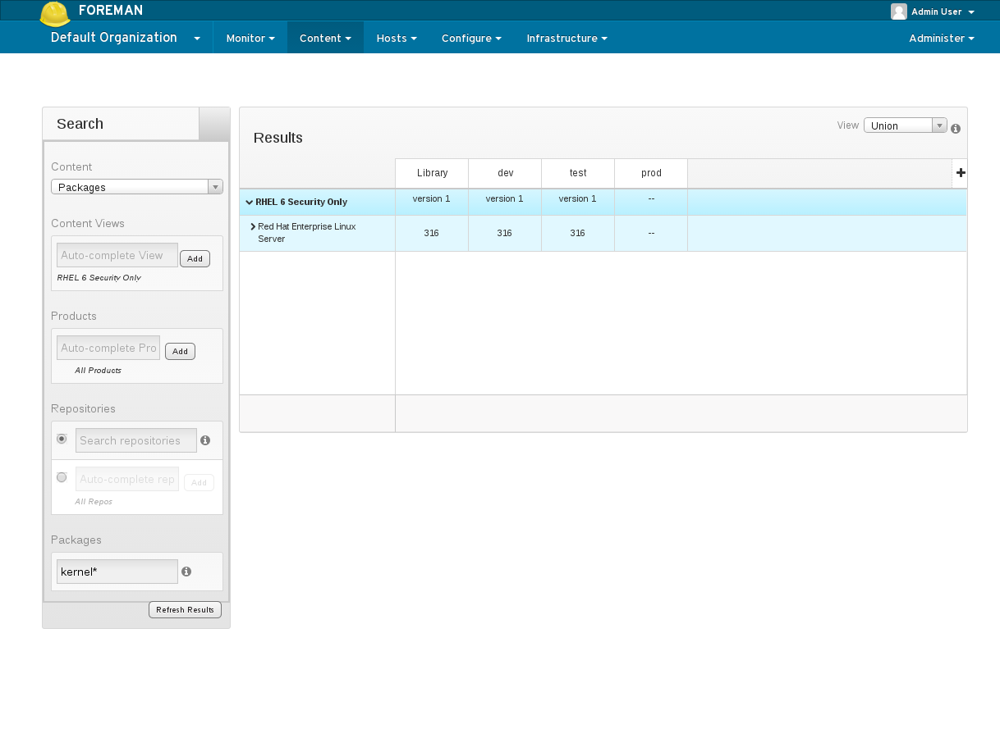
List Packages within a Repository: 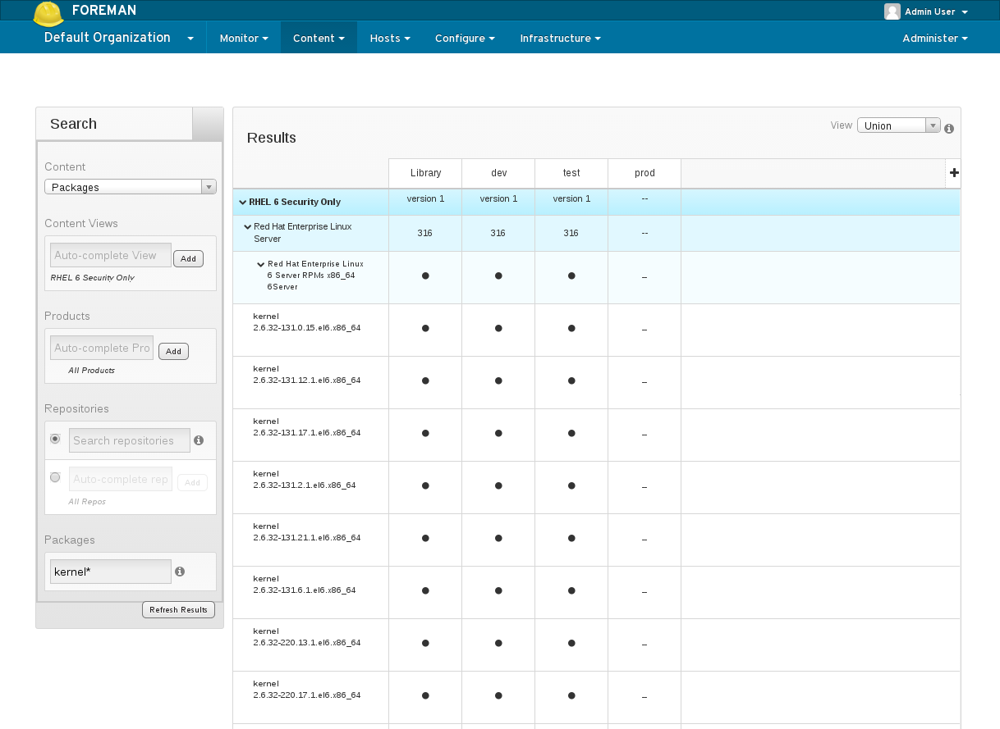
View Package Details
To view package details:
- hover over a package name (e.g. “busybox”) and for additional details:
- click View package files
- click View package changelog
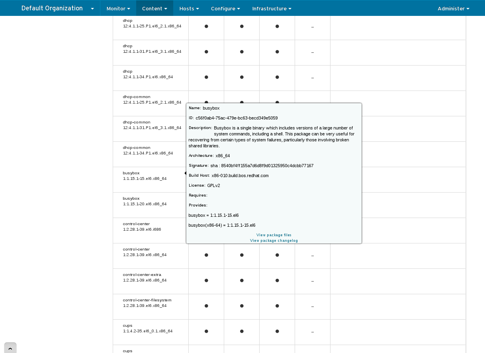
Compare Repositories
To compare multiple repositories:
- perform the following actions from the search widget located on the left side of the page:
- select Content > Repositories
- click Search or Refresh Results
- click on the > located to the left of the desired Product names (e.g. “Red Hat Enterprise Linux”) to view the list of repositories in those products
- click on the checkboxes next to the repositories to compare
- click Compare Selected
Search Results and Select Products: 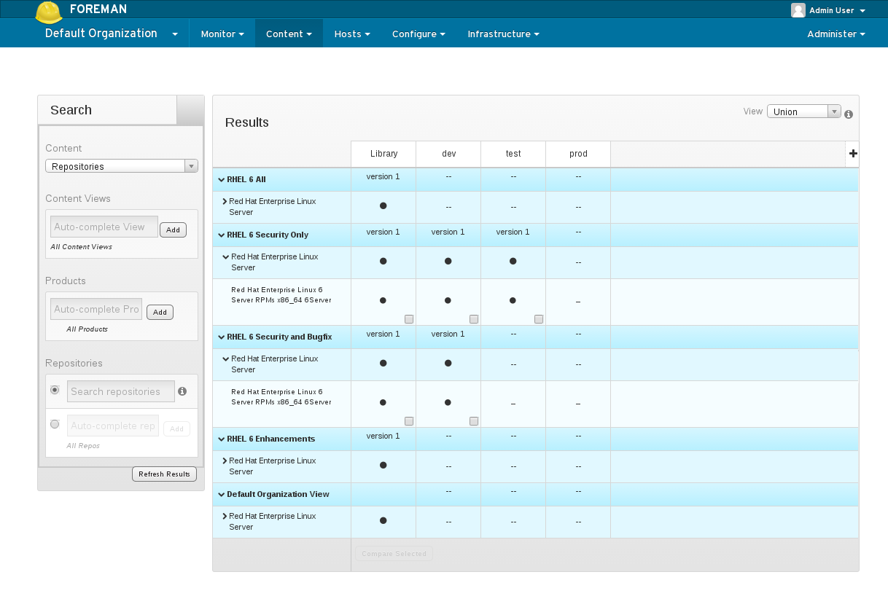
Select Repositories to Compare: 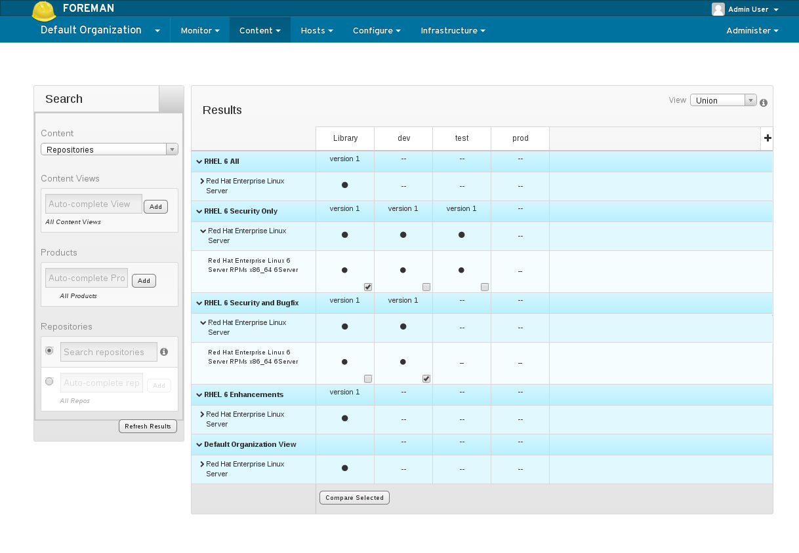
Comparison Results:
- A darkened circle indicates that the errata exists in the associated repository and a hyphen (-) indicates that it does not.
- The image below illustrates a Union comparison for Errata; however, multiple options are available when comparing content. For example,
- Show:
- Errata
- Packages
- Puppet Modules
- View:
- Union: Show all results regardless of which columns they exist in.
- Intersection: Show only results that exist in all selected columns.
- Difference: Show only results that do not exist in all selected columns.
- Show:
- In addition, hovering over an Errata ID (e.g. RHBA-2014:1056), Package name (e.g. “busybox”) or Puppet Module name (e.g. “httpd”) will provide more details on the object, similar to what is shown in View Package Details
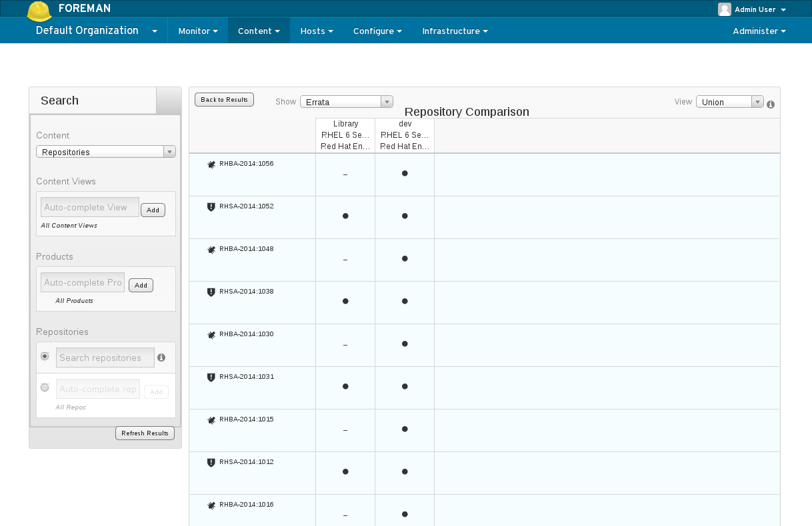